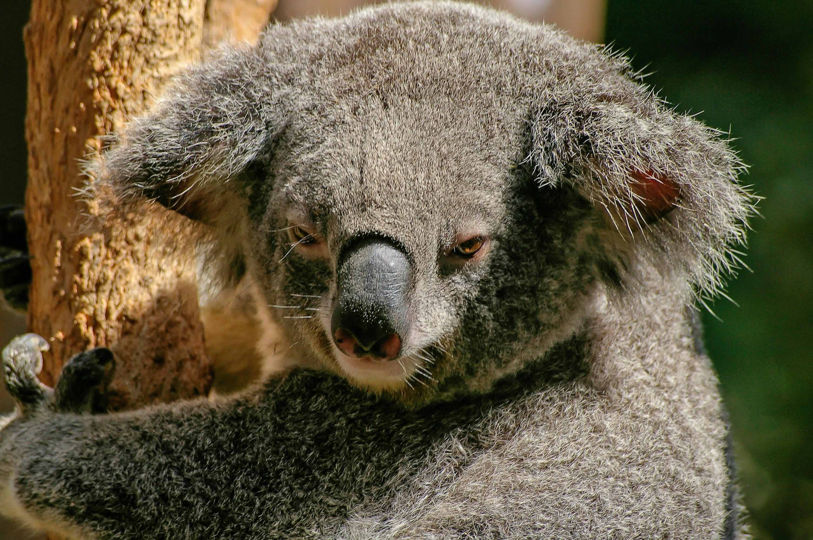
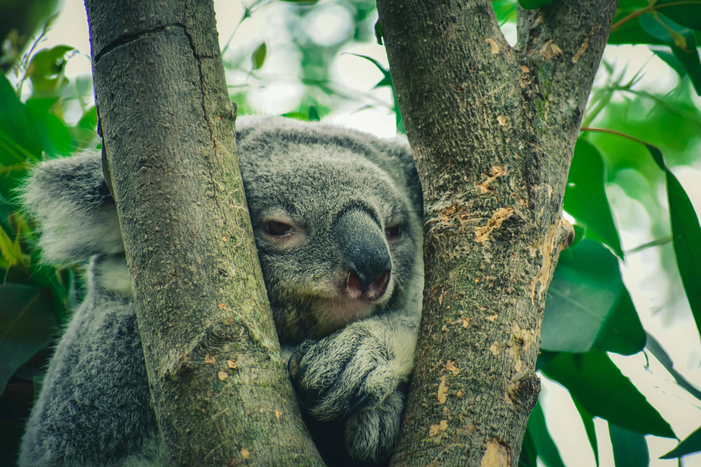

Koala Facts
 Your Koala Questions Answered
-
What does a Koala bear look like?
Koalas have soft, wool-like fur that is gray above and white below... -
What is the endangered status of Koalas?
Koalas are classified as vulnerable to endangered. -
How large can Koalas get?
They weigh about 30 pounds and grow to be around 2 feet tall. -
What is the average lifespan of a koala?
Koalas can live up to 17 years, though males often live only 2–10 years. -
Where do Koalas live?
Today they are found in Queensland, New South Wales, Victoria, and South Australia. -
What do Koalas eat?
They eat eucalyptus leaves, bark, mistletoe, and box leaves.